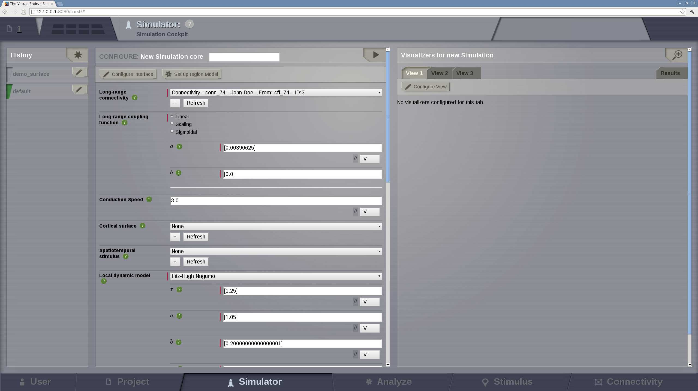
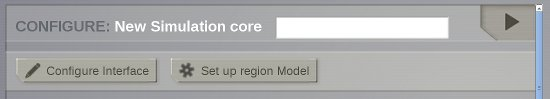

Simulator
A configurable multicolumn interface that combines TheVirtualBrain simulation, analysis and visualization capabilities.
Preview for Simulator Area
Configure a Simulation
- On the top of this column there is:
- a field to enter the new simulation name,
- the Launch button on the top right to start the simulation, and
- the Configure Interface button to select which of the simulation components are visible.

Via this column, you have access to all the simulator components configurable settings:
- Long Range Connectivity
- Long Range Coupling Function
- Conduction Speed
- Cortical Surface
- Stimulus
- Local Dynamics Model - State Variable Range - State Variables to be recorded - Initial Conditions
- Integration Scheme - Integration Step Size
- Monitors
- Simulation Length
You can find more detailed information by clicking on the  icon next to each element.
icon next to each element.
Note
TVB performs region-based and surface-based simulations
You can access specific configuration pages for both types of simulation.
Region-based simulations
The Set up region Model button leads you to an interactive phase-plane display. This tool shows the 2-dimensional planes of the general n-dimensional phase space of the local dynamics model.
It allows you to observe how the dynamics of the physical model change as a function of its parameters. (See the API documentation for more details about this interactive display)

Preview for region model configuration.
Surface-based simulations
If you are launching a surface-based simulation, then it is possible to add more complexity by spatially varying the model parameters.
In order to do that, click on Set up surface model. A new configuration page will be loaded.

Preview for surface model configuration.
Tip
Parameter Space Exploration
It is possible to launch parallel simulations to systematically explore the parameter space of the local dynamics model. In the current TVB version, up to 2 parameters can be inspected at the same time.

The results will be presented in a discrete two dimensional graph. Each point represents the results of a simulation for an unique combination of parameters. The disk size corresponds to Global Variance and the color scale corresponds to Variance of the Variance of nodes.
Simulation History
On the left column, a history of all simulations is kept and can be
accessed at any time. Each simulation can be renamed or deleted by
clicking on the upper right  icon.
icon.

Simulation editing menu
Caution!
Please notice that deleting a simulation will also delete all resulting data that had been produced.
Each simulation has a color label that represents its current status:
- pale blue: simulation is running,
- green: simulation is finished,
- red: an error occured during the simulation.
Note
You cannot rename a Simulation while it is running.

Tip
The star button allows you to create a new simulation. using the default Simulator parameters.
Display Simulation Results
On the right column you will find an area where you can configure displays to exhibit your simulation results.
Hint
Maximize this column by clicking on the zoom icon located in the top right corner.
There are 4 tabs:
three View tabs you can set up by selecting:
- TVB time-series Visualizers that directly plot the resulting time-series or
- TVB-Visualizers associated with a TVB-Analyzer. In this case, simulation results undergo two steps: they are first analyzed and those secondary results are shown in a corresponding visualizer.
one Results tab containing the current simulation data structure tree. You can inspect each element through this tree in the same way as in Projects --> Data Structure. A full list of visualizers and analyzers is available from the component overlay menu.
Tip
Once your results are available, by clicking on  you will be
redirected to a new page where only the currently selected visualizer is
presented. In this new page, you can click on
you will be
redirected to a new page where only the currently selected visualizer is
presented. In this new page, you can click on  in the top right corner
to access a new menu which will allow you to:
in the top right corner
to access a new menu which will allow you to:
- Save a snapshot of the current figure.
- Relaunch the visualizer using a different entity, if available. For instance, a different time-series.
Preview for Full Visualizer mode.
All the snapshots you save can be managed in Projects --> Image Archive page.
Simple Visualizers
Brain Activity Visualizer
A 3D scene of the brain activity:
- at the region level: the brain is represented by a coarse granularity - each region is represented with only one color.

Preview for Brain Activity Visualizer at the region level
- at the surface level: the brain is represented by a fine granularity - each surface vertex has an individual measure.
Time Series Visualizer (svg/d3)

Preview for Time-Series Visualizer (svg/d3)
EEG Time Series Visualizer

Preview for EEG Time Series Visualizer
If you used an EEG monitor to record the activity of your large-scale brain simulation, this display allows you to select the channels of the 62-sensors EEG recording.

Selecting the "channels" to be displayed.
Dual Brain - EEG Visualizer
Preview for EEG Time Series Visualizer
This visualizer combines the brain activity on top of a 3D display of the pacient's head and on the right column, the EEG channels recordings. Channel selection is also available.
Brain activity wit EEG recordings.
Dual Brain - sEEG Visualizer
This visualizer combines the brain activity on top of a 3D display of the pacient's head and on the right column, the sEEG (Stereo EEG) channels recordings. Channel selection is also available.

Brain activity wit sEEG recordings.
Connectivity Measure Visualizer
This visualizer can be used for displaying various Brain Connectivity Measures, related to a given Connectivity.
On the X axis, we will see the Connectivity nodes listed, and for each of them, we see the computed measure on the Y axis.

Connectivity Measure Visualizer.
Topographic Visualizer
This visualizer can be used for displaying various Brain Connectivity Measures, related to a given Connectivity. Its input is same as for the previous visualizer (Connectivity Measure Visualizer), but the display is completely different. Instead of a discrete view, this time, we can have a continous display (with gradients).

Preview for Topographic Visualizer
Group Display
Discrete PSE Visualizer
Discrete Parameter Space Exploration View, will show up to two measures of the Simulator results, after varying input Simulator Parameters. The two displayed measures are emphasized in the node shapes and node colors.
When running a range of Simulations in TVB, it is possible to do it by varying up to 2 input parameters (displayed on the X and Y axis of current viewer).This visualizer supports to display results when the resulting space is not bigger than 200 points.
Preview for Discrete PSE Visualizer, when varying two input parameters of the simulator
When moving with your mouse cursor over a graph node, you will see a few details about that particular simulation result. When clicking a node, an overlay window will open, which gives you full access to view or further analyze that particular Simulation result.
Isocline PSE Visualizer
Continuous Parameter Space Exploration View, will show the effect of varying Simulator parameters in a continuous form.
When running a range of Simulations in TVB, it is possible to do it by varying up to 2 input parameters (displayed on the X and Y axis of current viewer). This visualizer supports ranges with 2 dimensions only, it does not support ranges with only one dimension. Also both varying dimensions need to be numeric parameters (no DataType ranges are supported for display in this visualizer).

Preview for Continuous PSE Visualizer, when varying two numeric input parameters of the simulator
Controls for scaling or zooming the graph are available in this viewer. When you click on the coloured area, an overlay window will open, containing possibility to view or further analyze the simulation result closest to the point where you clicked.
Analyzers + Visualizers
Covariance Visualizer
Displays the covariance matrix. The matrix size is number of nodes x number of nodes
Preview for Covariance Visualizer
Cross Coherence Visualizer
Displays the cross-coherence matrix. Axes represent brain nodes. The matrix size is number of nodes x number of nodes.

Preview for Cross Coherence Visualizer
Complex Coherence Visualizer
Displays the complex-cross-coherence matrix. Axes represent brain nodes. The matrix is a complex ndarray that contains the number of nodes x number of nodes cross spectrum for every frequency frequency and for every segment
This visualizer is very similar with the previous one (Cross Coherence Visualizer).
Preview for Complex Coherence Visualizer
Cross Correlation Visualizer
Displays the cross-correlation matrix. Similar to the previous three visualizers.
Pearson Coefficients Visualizer
Displays the Pearson correlation coefficients matrix. Similar to the previous four visualizers.
Fourier Spectrum Visualizer
Plots the power spectrum of each node time-series.

Preview for Fourier Spectrum Visualizer
Principal Component Visualizer
On the left, the ring plot displays the fraction of the variance that is explained by each component.
On the right, the first ten components are plotted against the brain nodes (variables).

Preview for Principal Components Analysis Visualizer
Independent Component Visualizer
ICA takes time-points as observations and nodes as variables.
As for PCA the TimeSeries datatype must be longer (more time-points) than the number of nodes. Mostly a problem for TimeSeriesSurface datatypes, which, if sampled at 1024Hz, would need to be greater than 16 seconds long.

Preview for Independent Components Analysis Visualizer
Wavelet Spectrogram Visualizer
2D representation that shows how the signals wavelet spectral coefficients (frequency) vary with time.

Preview for Wavelet Visualizer